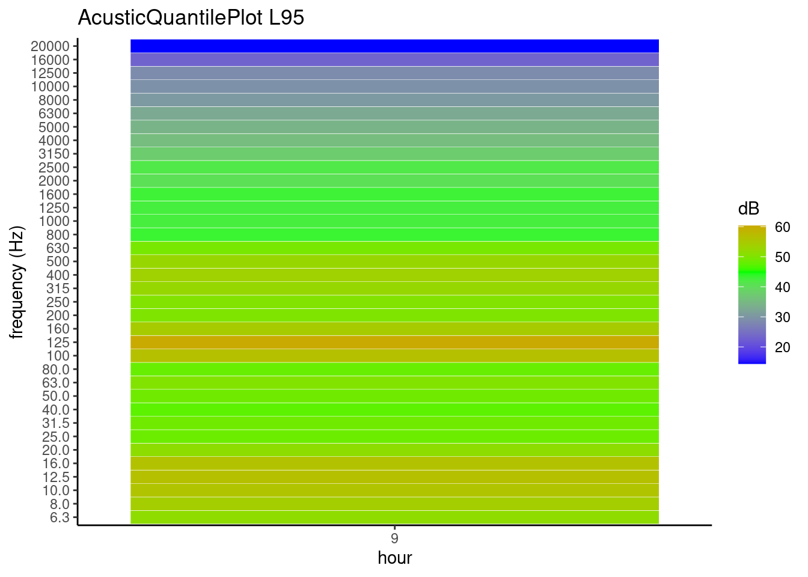
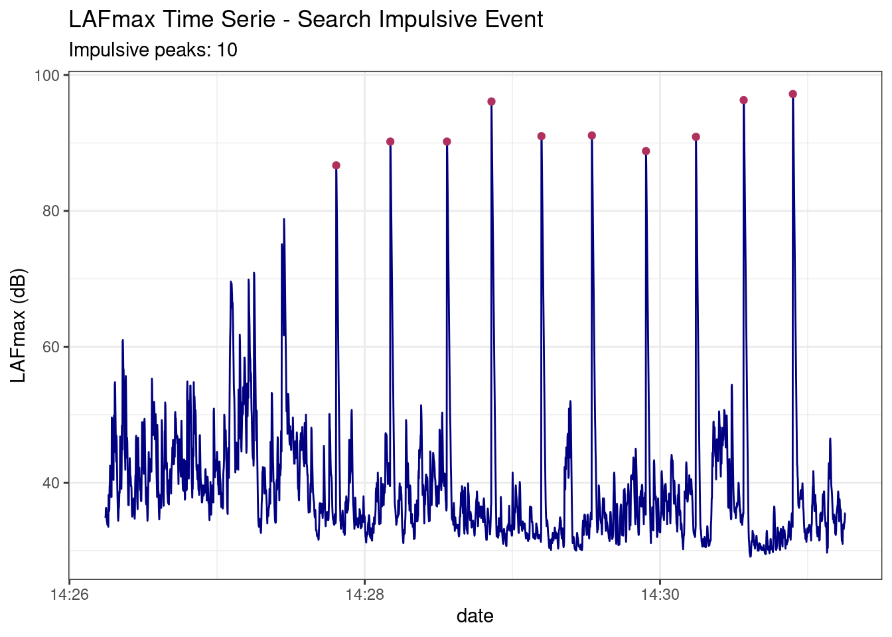

Installation
The development version can be installed from GitHub. Installation of OpeNoise from GitHub is easy using the devtools package.
# install.packages("devtools")
devtools::install_github("Arpapiemonte/openoise-analysis")Introdution
This tutorial explains how to use the OpeNoise library. It works on acoustic data acquired with sound level meters instrument. Input dataset format is showed in internal examples that you can access them with the data() function.
Acoustic summary calculation:
Energetic average
Function calculate energetic average of vector of values in dB. RoundTo function round value at 0.5.
energetic.mean(PTFA$LAeq)
#> [1] 45.7
x <- energetic.mean(PTFA$LAeq)
RoundTo(x, 0.5)
#> [1] 45.5Energetic average weighted
Function calculate energetic average weighted of vector’s values in dB respect to vector’s time like string in format “HH:MM:SS”
energetic_w.mean(c(55.2, 88.6), c("03:22:52", "08:55:33"))
#> [1] 87.2Acoustic percentile
Function return reverse percentile of un vector’s values.
AcuPercentile(PTFA$LAeq)
#> L1 L5 L10 L50 L90 L95 L99
#> 53.747 48.600 47.200 44.400 43.100 43.000 42.700
RoundTo(AcuPercentile(PTFA$LAeq), 0.5)
#> L1 L5 L10 L50 L90 L95 L99
#> 53.5 48.5 47.0 44.5 43.0 43.0 42.5Day and night acoustic percentiles calculate
data("exampleHourlyData")
AcuDNPercentile(df = exampleHourlyData,
parameter = "leq",
from = "5",
to = "22",
period = "night")[1:5]
#> [[1]]
#> L1 L5 L10 L50 L90 L95 L99
#> 72.767 72.235 70.940 69.550 51.950 51.420 50.204
#>
#> [[2]]
#> L1 L5 L10 L50 L90 L95 L99
#> 71.448 70.840 70.620 69.850 50.750 48.425 47.285
#>
#> [[3]]
#> L1 L5 L10 L50 L90 L95 L99
#> 71.843 71.615 71.060 69.550 52.250 50.770 48.794
#>
#> [[4]]
#> L1 L5 L10 L50 L90 L95 L99
#> 72.656 72.080 71.280 70.000 52.560 51.350 49.550
#>
#> [[5]]
#> L1 L5 L10 L50 L90 L95 L99
#> 70.770 70.650 70.500 69.600 51.450 49.575 48.795Energetic hourly average
Function return energetic average with hourly aggregation.
HourlyEmean(PTFA, "LAeq", timeZone = "Europe/Rome")
#> date LAeq
#> 1 2022-03-07 10 45.7Time decomposition
function retun seconds from hour, minutes and seconds.
hour <- 5
minute <- 25
second <- 50
deco.time(hour, minute, second)
#> [1] "Time decomposition from hours, minutes and seconds to seconds:"
#> [1] 19550holidays date (Gregorian calendar)
This is simple function using Gauss’algorithm to return holiday date in according of Gregorian calendar.
HolidaysDate(2024)
#> [1] "2024-01-01" "2024-01-06" "2024-04-25" "2024-05-01" "2024-06-02"
#> [6] "2024-08-15" "2024-11-01" "2024-03-31" "2024-04-01"Average day/night period (06:00/22:00 - 22:00/06:00)
Function return energetic average or simple average with aggregation day (06:00/22:00) or night (22:00/06:00).
data("exampleHourlyData")
df_night <- avr.day.night(exampleHourlyData, variable = "leq", period = "night",
stat = "e_mean")
head(df_night, 5)
#> DATA MEAN MIN MAX
#> 1 2020-12-11 56.1 46.9 60.3
#> 2 2020-12-12 54.9 46.5 60.0
#> 3 2020-12-13 56.5 46.3 61.5
#> 4 2020-12-14 56.5 48.4 61.3
#> 5 2020-12-15 56.9 48.6 62.4
df_day <- avr.day.night(exampleHourlyData, variable = "leq", period = "day",
stat = "e_mean")
head(df_day, 5)
#> DATA MEAN MIN MAX
#> 1 2020-12-11 69.9 64.9 72.3
#> 2 2020-12-12 69.4 63.4 72.6
#> 3 2020-12-13 69.0 60.2 72.1
#> 4 2020-12-14 69.6 64.1 73.2
#> 5 2020-12-15 69.7 64.2 72.9Lden calculation
This function return energetic average aggregate:
- D_acu (day 06:00/22:00)
- D (day 06:00/20:00)
- E (Evening 20:00/22:00)
- N (Night 22:00/06:00)
- Lden (is the level of noise day-evening-night and is an indicator correlated with the global nuisance produced by noise over the overall 24 hours)
data("exampleHourlyData")
LdenCalculator(dataframe = exampleHourlyData, variable = "leq", type = "daily")
#> # A tibble: 81 × 6
#> date D_acu D E N Lden
#> <fct> <dbl> <dbl> <dbl> <dbl> <dbl>
#> 1 2020-12-11 69.9 70.4 66 NA NA
#> 2 2020-12-12 69.4 69.7 65.6 56.1 68.9
#> 3 2020-12-13 69 69.3 65.4 54.9 68.4
#> 4 2020-12-14 69.6 70 64.9 56.5 69.1
#> 5 2020-12-15 69.7 70.1 65.1 56.5 69.2
#> 6 2020-12-16 70.3 70.7 65.4 56.9 69.7
#> 7 2020-12-17 70.1 70.5 65.9 57.4 69.7
#> 8 2020-12-18 69.6 69.8 66.7 57.2 69.3
#> 9 2020-12-19 69.1 69.4 66.1 56.6 68.9
#> 10 2020-12-20 69.2 69.5 66.5 54.7 68.7
#> # ℹ 71 more rows
LdenCalculator(dataframe = exampleHourlyData, variable = "leq", type = "total")
#> # A tibble: 1 × 4
#> D E N Lden
#> <dbl> <dbl> <dbl> <dbl>
#> 1 69.8 66.3 57.6 69.4dbsum
Function calculate energetic sum or difference of values
dbsum(x = 55, y = 33, operator = 1)
#> [1] 55.02732Plot functions (time history and Running Leq, spectrogram, quantile plot)
PlotNoiseTimeHistory(df = PTFA, variable = "LAeq", mp = "PTFA", y_lim = c(40, 60))PlotNoiseTHcompare function shows Leq’s time history with frequency components
PlotNoiseTHcompare(df = PTFA,
variable = "LAeq",
listvar = c("LZFmin.100",
"LZFmin.40.0"),
mp = "PTFA",
runleq = FALSE)
PlotSpectrogram(PTFA, coLs = c(3:38), plot_title = "Spectrogram")AcousticQuantilePlot function plot acoustic quantile aggregate by hour
library(lubridate)
datasetI <- dataset_impulsive1
datasetH <- dfImpulsiveTrasform(datasetI)
datasetH$date <- ymd_hms(as.character(datasetH$date))
AcousticQuantilePlot(df = datasetH, Cols =c(3:38), Quantile =0.95,
TimeZone = "UTC")
Search tone
This function search tonal components in acoustic measure in according of Italian law.
search.tone(PTFA[, c(3:38)], statistic = energetic.mean, plot.tone = T)Impulsive finder
This function search impulsive events in acoustic measure
data("dataset_impulsive2")
results <- searchImpulse(dataset_impulsive2)
results$dfPeaks
#> ymax xmax startPeak stopPeak date cri1 cri2
#> 1 97.2 2795 2794 2818 2022-05-06 14:30:54 y 5
#> 2 96.3 2595 2594 2622 2022-05-06 14:30:34 y 5
#> 3 96.1 1570 1564 1591 2022-05-06 14:28:51 y 4
#> 4 91.1 1978 1977 2000 2022-05-06 14:29:32 y 5
#> 5 91.0 1773 1771 1794 2022-05-06 14:29:11 y 5
#> 6 90.9 2401 2397 2420 2022-05-06 14:30:14 y 4
#> 7 90.2 1159 1158 1183 2022-05-06 14:28:10 y 5
#> 8 90.2 1389 1387 1410 2022-05-06 14:28:33 y 5
#> 9 88.8 2198 2197 2218 2022-05-06 14:29:54 y 4
#> 10 86.7 939 936 959 2022-05-06 14:27:48 y 5
results$Plot
Transform dataset from 100 ms data acquisition to 1 s data acquisition
data("dataset_impulsive2")
head(dataset_impulsive2, 3)[, 1:5]
#> date LAeq LASmax LAF LAFmax
#> 2 2022-05-06 14:26:14.600 34.8 40.4 34.5 34.8
#> 3 2022-05-06 14:26:14.700 35.0 40.1 34.6 35.1
#> 4 2022-05-06 14:26:14.800 37.0 39.8 35.7 36.2
dfT <- dfImpulsiveTrasform(dfImpulsive = dataset_impulsive2,
statistic = energetic.mean)
head(dfT, 3)[, 1:5]
#> date LAeq LZeq.6.3 LZeq.8.0 LZeq.10.0
#> 1 2022-05-06 14:26:14.6 34.8 29.4 37.5 43.7
#> 2 2022-05-06 14:26:14.7 35.0 31.5 34.9 38.5
#> 3 2022-05-06 14:26:14.8 37.0 28.2 37.1 35.2Calculation of the intrusiveness index
library(OpeNoise)
library(lubridate)
data("dataset_impulsive1")
data("dfBW")
# dataset handling
df_Imp_sec <- dfImpulsiveTrasform(dataset_impulsive1,
statistic = energetic.mean)
df_Imp_sec$date <- ymd_hms(df_Imp_sec$date, tz = "Europe/Rome")
# extraction of frequency bands from the dataset
freqDF <- df_Imp_sec[, grep("LZeq\\.", names(df_Imp_sec))]
################################################################################
# INTRUSIVENESS INDEX CALCULATION FUNCTION
################################################################################
dfa <- freqDF # Environmental dataset simulation
dfr <- freqDF
# Residual dataset simulation by subtracting 4 from dfa
dfr[c(5,8,12,15), ] <- dfr[c(5,8,12,15), ] - 4
BW <- dfBW$BW # bandwidth
# application of the function
IntrusiveIndex(dfa, dfr, BW)
#> [1] "10 Intrusivity Index is negligible"